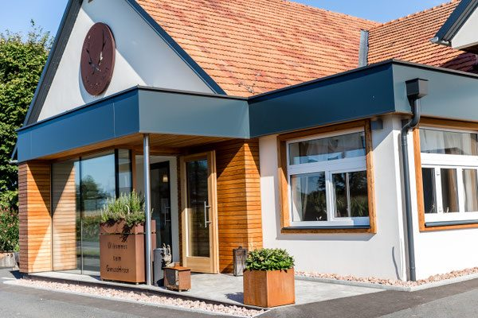
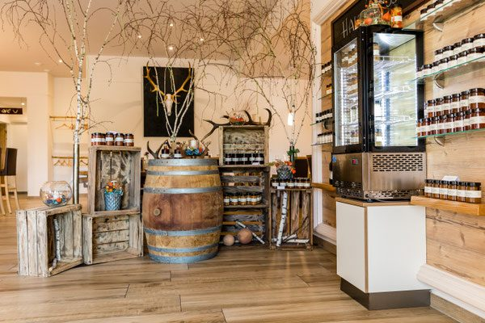
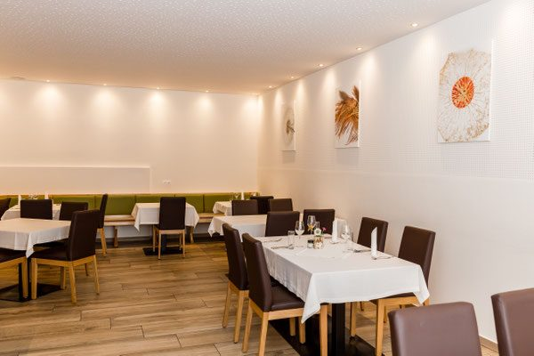

Die Stuben
Helle Räume mit grünen Bänken, weißen Tischtüchern und Birkenstämmen als Raumteiler. An der Wand die Dessert-Tafel, im Regal die Weine. Hier sitzen Paare genauso gut wie größere Runden.
Das Haus
Kulinarische Vielfalt mit viel Liebe zum Detail – das gilt bei uns nicht nur für den Teller. Birkenstämme, Altholz, Geweih und Leinen: Unser Wirtshaus ist gebaut, damit man bleibt.

Ankommen
Schon am Eingang beginnt das Haus zu erzählen: das Hirschmotiv am Giebel, die Holzfassade, die Kräuter in den Kisten neben der Tür. Im Windfang hängt die Karte in einem Goldrahmen aus Wurzelholz, daneben steht ein handgeschriebenes „Herzlich Willkommen“.
Der GenussHirsch trägt den Vulgonamen Hendlstub’n Palz – die Wirtshausgeschichte des Hauses ist älter als der Name an der Fassade.
Räume
Helle Räume mit grünen Bänken, weißen Tischtüchern und Birkenstämmen als Raumteiler. An der Wand die Dessert-Tafel, im Regal die Weine. Hier sitzen Paare genauso gut wie größere Runden.
Der Tisch in der Ecke, mit Polstern, Blick aus dem Fenster und Geweih auf der Fensterbank – der Platz, der am häufigsten reserviert wird.
Altholz, Barhocker und ein gut bestücktes Regal: Platz für den Aperitif vor dem Essen und das Glas danach.
Unter altem Holz, mit gemauertem Ofen und Blick ins Grüne. Überdacht – damit auch ein Sommerregen niemanden hineinschickt.
Galerie







Virtuelle Tour: Der GenussHirsch bietet auf der bestehenden Website eine virtuelle Tour durch das Haus an. In der neuen Fassung wird sie direkt hier eingebunden – erst nach einem bewussten Klick, damit die Seite ohne externe Dienste und ohne Cookie-Banner lädt.
Aus dem Haus
Im Gastraum stehen Regale und ein Weinfass voller Gläser und Flaschen aus dem Haus. Fragen Sie beim Service nach dem aktuellen Angebot – vieles davon eignet sich auch gut als Mitbringsel.
Wer lieber ein Erlebnis verschenkt, greift zum Gutschein für einen Abend im GenussHirsch.